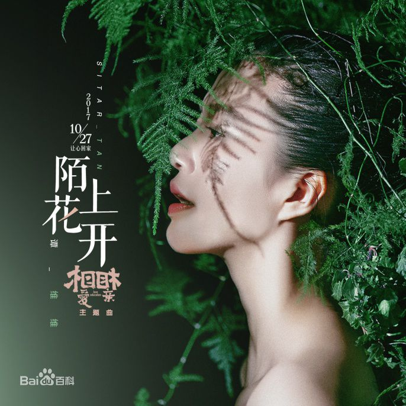
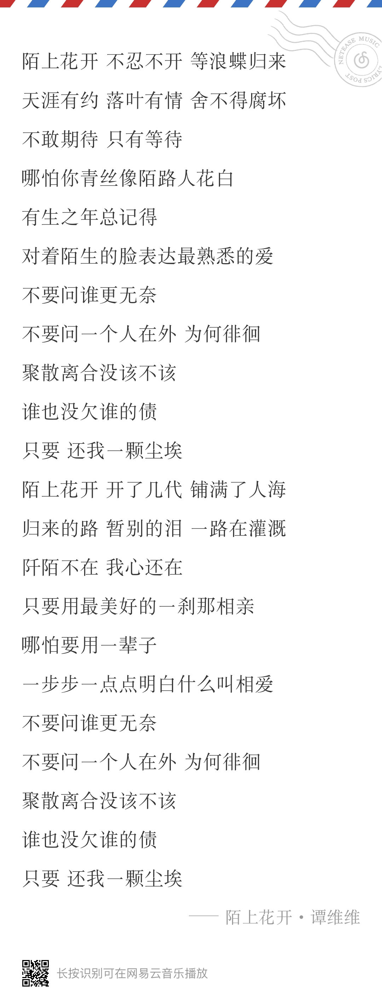

陌上花开
歌曲背景
专辑
《陌上花开》该曲MV于2017年10月20日首发，MV中，
《陌上花开》该曲MV于2017年10月20日首发，MV中， 谭维维头戴不同的花与枝叶头饰出镜，以她的演唱画面搭配电影片段。 电影《相爱相亲》中母亲（张艾嘉饰）、女儿（郎月婷饰）和姥姥
（吴彦姝饰）三人对爱的不同理念、相互之间的冲撞都在MV中展现，
特意剪辑了姥姥擦坏照片时无助的痛哭、丈夫（田壮壮饰）
在车中对妻子的深情告白等画面。
《陌上花开》歌词颇具意境，深情诠释了在等待中期待，
在期待中徘徊的爱恋心境，足以触动许多人的情感开关。
同时这些歌词又与《相爱相亲》的故事相呼应，
展现了一个女人在爱情中完整的心路历程。在该曲婉转悠扬的曲调中，
谭维维用清亮透彻的嗓音娓娓道来了一个女人的爱情心声，
歌声动人心弦，令人沉醉。
陌上花开歌词：
